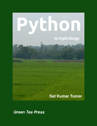

Python in Hydrology
by Sat Kumar TomerDownload Python In Hydrology in PDF.
Description
Python in Hydrology is written for learning Python using its applications in hydrology. The book covers the basic applications of hydrology, and also the advanced topic like use of copula.
The book is available under the GNU Free Documentation License. Readers are free to copy and distribute the text; they are also free to modify it, which allows them to adapt the book to different needs, and to help develop new material.
If you have comments, corrections or suggestions, please send me email at
Download
Python in Hydrology is available in two electronic formats:
-
Precompiled copies of the book are available in
PDF
- The LaTeX source code is available in a Subversion repository.
More free books are available from Green Tea Press.